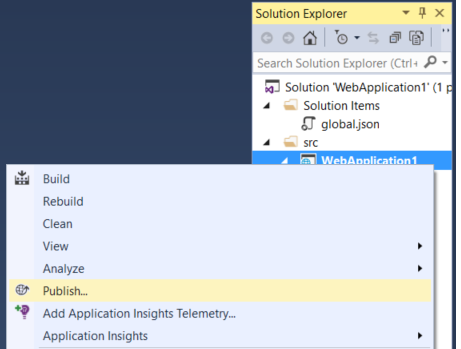

Deploy an ASP.NET Core web app to Azure using Visual Studio¶
Sections:
Set up the development environment¶
- Install the latest Azure SDK for Visual Studio 2015. The SDK installs Visual Studio 2015 if you don’t already have it.
Note
The SDK installation can take more than 30 minutes if your machine doesn’t have many of the dependencies.
- Install .NET Core + Visual Studio tooling
- Verify your Azure account. You can open a free Azure account or Activate Visual Studio subscriber benefits.
Create a web app¶
From the Visual Studio Start page, tap New Project.
Alternatively, you can use the menus to create a new project. Tap File > New > Project.

Complete the New Project dialog:
- In the left pane, tap Web
- In the center pane, tap ASP.NET Core Web Application (.NET Core)
- Tap OK
In the New ASP.NET Core Web Application (.NET Core) dialog:
- Tap Web Application
- Verify Authentication is set to Individual User Accounts
- Verify Host in the cloud is not checked
- Tap OK
Test the app locally¶
- Use Ctl-F5 to run the app
- Tap the About and Contact links. Depending on the size of your device, you might need to click the navigation icon to show the links
- Tap Register and register a new user. You can use a fictitious email. When you submit, you’ll get the following error:
You can fix the problem two different ways:
Tap Apply Migrations and when the page updates, refresh the screen
Run the following from the command line in the project directory:
dotnet ef database update
The app displays the email registration used to register and a Log off link.
Deploy the app to Azure¶
Right click on the project and select Publish
In the Publish dialog, tap Microsoft Azure App Service
Tap New to enter a new resource group. Creating a new resource group will make it easy to delete all the Azure resources you create in this tutorial.
Create a new resource group and app service plan:
- Tap New for the resource group and enter a name for the new resource group
- Tap New for the app service plan and select a location near you. You can keep the default generated name
- Tap Explore additional Azure services to create a new database
- Tap the green + icon to create a new SQL Database
- Tap New on the Configure SQL Database dialog
- You can keep the default Server Name
- Enter an administrator user name and password, and then tap OK. Remember the user name and password.
- Tap OK on the Configure SQL Database dialog
- Tap Create on the Create App Service dialog
- Tap Next in the Publish dialog
On the Settings stage of the Publish dialog:
- Check Use this connection string at runtime
- Check Apply this migration on publish
Tap Publish
Visual Studio will publish your app to Azure and launch the cloud app in your browser.
Test your app in Azure¶
- Test the About and Contact links
- Register a new user
Update the app¶
- Edit the Views/Home/About.cshtml Razor view file. Change the content, for example:
@{
ViewData["Title"] = "About";
}
<h2>@ViewData["Title"].</h2>
<h3>@ViewData["Message"]</h3>
<p>My updated about page.</p>
- Right click on the project and select Publish
- Tap Publish and verify the changes you made are displayed on Azure
Clean up¶
When you have finished testing the app, log into the Azure portal and delete the app.
- Log into the Azure portal
- In the left blade tap Resource groups and then tap the resource group you created
- In the Resource group blade tap Delete
- Enter the name of the resource group and tap Delete